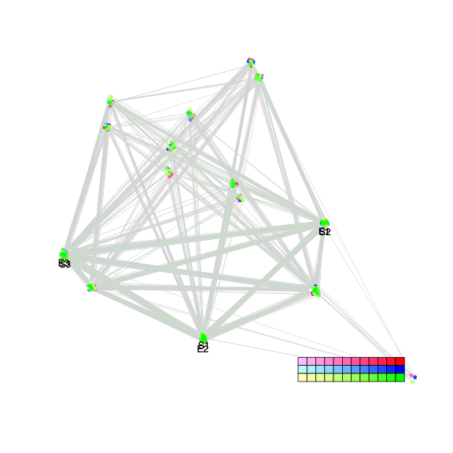
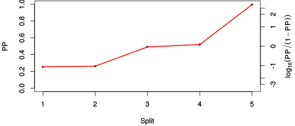
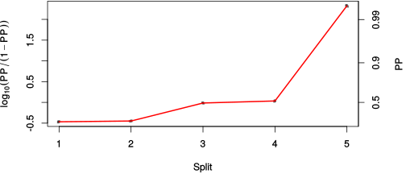

| chain # | burnin | subsample | Iterations (remaining) | command line | subdirectory | directory |
|---|---|---|---|---|---|---|
| 1 | 10000 | 1 | 90000 | /home/willemsen/software/bali-phy-3.0-beta2/bin/bali-phy E6_AA_red3_v2_AvesTurtles.fas -s 56463 -n AvesTurtles_c1 | AvesTurtles_c1-1 | /DATA/work/ONCOGENEVOL/database/trees/Bali-Phy/E6 |
| 2 | 10000 | 1 | 90000 | /home/willemsen/software/bali-phy-3.0-beta2/bin/bali-phy E6_AA_red3_v2_AvesTurtles.fas -s 63831 -n AvesTurtles_c2 | AvesTurtles_c2-1 | /DATA/work/ONCOGENEVOL/database/trees/Bali-Phy/E6 |
| 3 | 10000 | 1 | 90000 | /home/willemsen/software/bali-phy-3.0-beta2/bin/bali-phy E6_AA_red3_v2_AvesTurtles.fas -s 10239 -n AvesTurtles_c3 | AvesTurtles_c3-1 | /DATA/work/ONCOGENEVOL/database/trees/Bali-Phy/E6 |
| P(data|M) = -1260.142 +- 0.157 | Complete sample: 21 topologies | 95% Bayesian credible interval: 12 topologies |
Phylogeny Distribution

| Partition support: Summary |
| Partition support graph: SVG |
{kind=link}
| 50% consensus | Newick (+PP) | SVG | |||||
| 66% consensus | Newick (+PP) | SVG | |||||
| 80% consensus | Newick (+PP) | SVG | |||||
| 90% consensus | Newick (+PP) | SVG | |||||
| 95% consensus | Newick (+PP) | SVG | |||||
| 99% consensus | Newick (+PP) | SVG | |||||
| 100% consensus | Newick (+PP) | SVG | |||||
| MAP | Newick (+PP) | SVG | |||||
| greedy | Newick (+PP) | SVG |
{kind=link}
{kind=link}
{kind=link}
{kind=link}
{kind=link}
{kind=link}
{kind=link}
{kind=link}
Alignment Distribution
Partition 1
| Diff | Min. %identity | # Sites | Constant | Informative | ||||
|---|---|---|---|---|---|---|---|---|
| Initial | FASTA | HTML | Diff | 4.65% | 97 | 1 (1.03%) | 21 (21.6%) | |
| Best (WPD) | FASTA | HTML | AU | 6.5% | 165 | 7 (4.24%) | 59 (35.8%) |
Mixing
{kind=link}
{kind=link}
| burnin (scalar) | ESS (scalar) | ESS (partition) | ASDSF | MSDSF | PSRF-CI80% | PSRF-RCF |
|---|---|---|---|---|---|---|
| 771 | 1.004e+04 | 19803.331 | 0.003 | 0.005 | 1.001 | 1.01 |
Projection of RF distances for the first 3 chains3D | Variation of split PPs across chains |
Scalar variables
| Statistic | Median | 95% BCI | ACT | ESS | burnin | PSRF-CI80% | PSRF-RCF |
|---|---|---|---|---|---|---|---|
| prior | -170.8 | (-223.2, -122.4) | 16.74 | 16124 | 346 | 1 | 1.005 |
| prior_A1 | -150 | (-200.6, -102.5) | 13.92 | 19399 | 346 | 0.9999 | 1.004 |
| likelihood | -1241 | (-1261, -1221) | 9.169 | 29445 | 495 | 0.9996 | 0.9996 |
| logp | -1412 | (-1457, -1372) | 16.75 | 16122 | 346 | 1 | 1.006 |
| Heat.beta | 1 | ||||||
| Scale1 | 4.135 | (1.777, 7.751) | 1.133 | 238285 | 103 | 0.9999 | 1 |
| S1.F.pi.A | 0.0627 | (0.04038, 0.08759) | 7.735 | 34904 | 260 | 1 | 0.9982 |
| S1.F.pi.R | 0.1108 | (0.07978, 0.1441) | 8.071 | 33452 | 217 | 1 | 0.9945 |
| S1.F.pi.N | 0.02736 | (0.01288, 0.04504) | 8.37 | 32257 | 261 | 0.9997 | 0.9997 |
| S1.F.pi.D | 0.03499 | (0.01869, 0.05363) | 8.093 | 33361 | 256 | 1 | 1.003 |
| S1.F.pi.C | 0.05349 | (0.02915, 0.08197) | 9.12 | 29606 | 331 | 0.9996 | 1.007 |
| S1.F.pi.Q | 0.03534 | (0.01957, 0.05341) | 8.364 | 32282 | 326 | 1 | 0.9953 |
| S1.F.pi.E | 0.04907 | (0.02878, 0.07326) | 8.252 | 32720 | 525 | 0.9997 | 1.002 |
| S1.F.pi.G | 0.05959 | (0.03476, 0.08837) | 8.611 | 31355 | 408 | 1 | 1.005 |
| S1.F.pi.H | 0.02039 | (0.008694, 0.03503) | 7.714 | 35003 | 771 | 0.9998 | 0.9945 |
| S1.F.pi.I | 0.05329 | (0.03199, 0.07718) | 8.413 | 32093 | 260 | 1.001 | 1.001 |
| S1.F.pi.L | 0.1018 | (0.07121, 0.1355) | 8.166 | 33063 | 574 | 1 | 0.9964 |
| S1.F.pi.K | 0.06445 | (0.04268, 0.0886) | 8.451 | 31949 | 172 | 1 | 1.005 |
| S1.F.pi.M | 0.006095 | (0.0007959, 0.01468) | 9.496 | 28434 | 362 | 1 | 0.9916 |
| S1.F.pi.F | 0.0347 | (0.01723, 0.0557) | 8.561 | 31539 | 760 | 0.9995 | 1.003 |
| S1.F.pi.P | 0.04407 | (0.02308, 0.06846) | 9.011 | 29963 | 385 | 1 | 1.002 |
| S1.F.pi.S | 0.0535 | (0.03319, 0.07666) | 7.788 | 34669 | 238 | 1 | 0.9947 |
| S1.F.pi.T | 0.05318 | (0.03292, 0.07565) | 7.828 | 34493 | 320 | 1 | 1.004 |
| S1.F.pi.W | 0.02349 | (0.009095, 0.04184) | 8.178 | 33017 | 607 | 1 | 1.003 |
| S1.F.pi.Y | 0.04366 | (0.02315, 0.06621) | 8.192 | 32958 | 348 | 0.9999 | 0.9968 |
| S1.F.pi.V | 0.05207 | (0.03272, 0.07429) | 8.073 | 33446 | 335 | 0.9998 | 0.9968 |
| I1.RS07.meanIndelLengthMinus1 | 2.541 | (0.9152, 5.409) | 25.9 | 10422 | 359 | 1.001 | 1.008 |
| I1.RS07.logLambda | -3.73 | (-4.385, -3.036) | 7.547 | 35776 | 179 | 0.9997 | 0.9994 |
| |A1| | 131 | (111, 158) | 26.9 | 10036 | 322 | 0.9677 | 1.01 |
| #indels1 | 21 | (12, 30) | 14.24 | 18965 | 346 | 0.9167 | 1.004 |
| |indels1| | 80 | (41, 127) | 15.39 | 17548 | 249 | 0.9882 | 1.006 |
| #substs1 | 221 | (196, 240) | 22.01 | 12266 | 290 | 0.9655 | 1.008 |
| Scale1*|T| | 5.416 | (4.288, 6.672) | 4.566 | 59134 | 144 | 0.9999 | 0.9993 |
| |A| | 131 | (111, 158) | 26.9 | 10036 | 322 | 0.9677 | 1.01 |
| #indels | 21 | (12, 30) | 14.24 | 18965 | 346 | 0.9167 | 1.004 |
| |indels| | 80 | (41, 127) | 15.39 | 17548 | 249 | 0.9882 | 1.006 |
| #substs | 221 | (196, 240) | 22.01 | 12266 | 290 | 0.9655 | 1.008 |
| |T| | 1.315 | (0.5524, 2.34) | 1.018 | 265279 | 69 | 0.9997 | 1.001 |